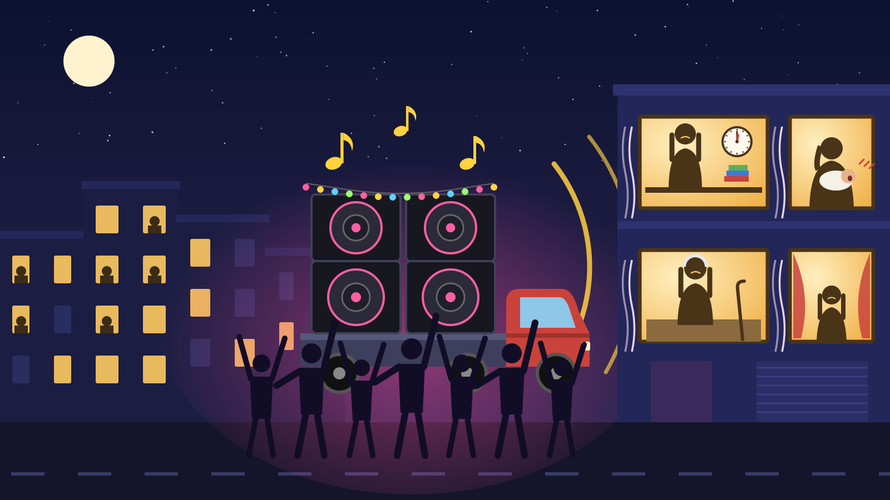
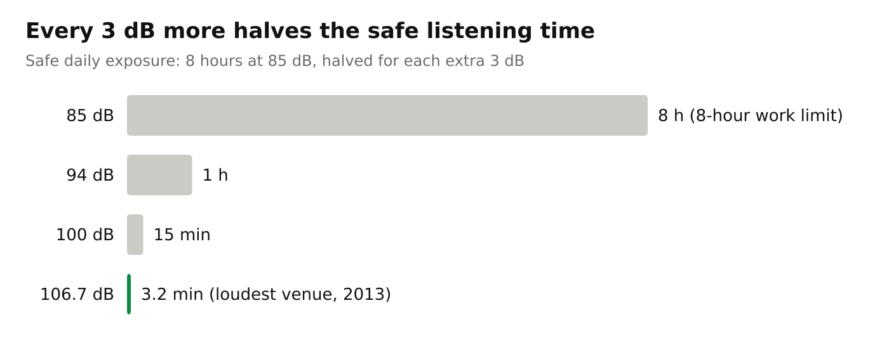

Science · City life
Patna, Turn It Down a Little
DJ trucks, pressure horns and what all that noise does to us. A look at why Patna is so loud, and how we might turn it down a little.

It's almost midnight. The procession went past hours ago, but the DJ truck has stopped at the corner of the lane and shows no sign of leaving. The bass comes straight through the walls and the window panes rattle. Upstairs, a girl with a board exam next week has given up on her books. An old man who should have been asleep long ago is sitting up in bed. A baby won't stop crying. And down on the road, a group of young men are dancing as if there's no tomorrow. Honestly, they look very happy.
If you live in Patna, you have seen this many times. It happens every festival season, and again at weddings, birthday parties and election rallies. For a while now I have been thinking about it, as someone who lives here and as someone who teaches science. How loud does it actually get? Why do we keep doing it? And is there a way to celebrate without it?
A little physics first
When we hear that a speaker was playing at 110 decibels and the limit is 55, most of us think it was about double the limit. It is much worse than that.
Decibels work on a logarithmic scale. Add 10 dB and the sound energy goes up ten times. Add 20 and it goes up a hundred times, add 30 and it's a thousand. Under the Noise Pollution (Regulation and Control) Rules, 2000, the limit for residential areas is 55 dB during the day and 45 dB at night. Near hospitals and schools, which count as silence zones, the daytime limit is 50.
In 2013, figures from the Bihar State Pollution Control Board (BSPCB), reported by The Times of India, put the loudest festival venue in Patna at 106.7 dB. That is about 52 dB above the daytime limit for a residential area. In terms of sound energy, it works out to roughly one and a half lakh times what the law allows.
Our ears don't hear it as lakhs of times louder, because hearing itself works roughly on a log scale. A common rule of thumb is that a sound seems twice as loud for every extra 10 dB. Even going by that, 52 dB over the limit feels about 36 times as loud as it should.
What it does to our ears
Hearing damage depends on how loud a sound is and how long we are exposed to it. Occupational safety guidelines usually allow 85 dB for eight hours a day. Every extra 3 dB doubles the sound energy, so the safe time gets cut in half each time.

So at 100 dB you have about fifteen minutes, and at 106.7 dB, the loudest venue measured in 2013, a little over three minutes. The people most at risk are actually not the neighbours. They are the ones right next to the speakers: the DJ, the organisers, the boys dancing in front. The neighbours pay in other ways. They lose sleep, they get irritable, their blood pressure goes up, and children can't study. The BSPCB chairman has himself said that noise causes irritability, hearing loss, high blood pressure and heart problems.
It isn't only festivals
Festival nights are the loudest, but Patna is noisy on ordinary days too.
A lot of this comes from our horns. A Transport Department survey found that at seven of the city's busiest crossings, the noise from honking went as high as 110 dB, louder than the loudest festival venue measured in 2013. When the department asked people about it, many said the constant honking left them angry and stressed, and some linked it to accidents. Two-wheelers and autos were named as the most frequent honkers. Pressure horns are even worse, and the High Court's 2026 directions mention them along with DJs and loudspeakers.
Then there is everything else: diesel generators during power cuts, construction work that goes on into the evening, autos and bikes with noisy engines, loudspeakers at shops and functions. BSPCB officials have named three-wheelers, honking, generator sets and construction without barriers as the main everyday sources in the city. None of these feels like much on its own. Put together, they mean many of us never really get a quiet hour, festival or no festival.
Why do we do it?
It's easy to say that the people playing loud music simply don't care about anyone. I don't believe that for a moment. The boy dancing next to the speaker is often the same boy who carried your gas cylinder up the stairs last month. On any other day, most of them would be the first to help a neighbour who fell ill. So I would rather ask what keeps pulling all of us towards louder and louder music. Psychology and physiology have some interesting answers.
Part of the reason lies in the body itself. In 2000, two researchers, Neil Todd and Frederick Cody, showed that loud dance music above about 90 dB can stimulate the vestibular system, the part of the inner ear that looks after balance. They suggested that this gives a pleasant feeling of movement, which may explain why people go looking for loud music. You don't just hear heavy bass, you feel it in your chest. That is probably why music at 70 dB feels flat to someone who wants to dance.
Then there is the crowd. The sociologist Émile Durkheim called it collective effervescence, the charge you feel when you are part of a big, excited group of people. Later studies found it is closely tied to simply being in a crowd, and a 2024 study linked it with happiness that lasts well after a live music event. When the music is that loud you can't hear yourself think, and in a way that is the whole point. You stop being one person and become part of the group.
What I find most interesting is that the same noise sounds different depending on who is listening. In 2013, a group of psychologists studied pilgrims at a month-long religious gathering in North India, where loud sound goes on day and night. Whether people found the noise pleasant or unpleasant depended on what it meant to them. Pilgrims who felt part of the event sometimes even found it calming. Older research also shows that we are far more bothered by noise we can't control. Think of the boy dancing next to the speaker and the girl trying to study two lanes away. For him it's his own celebration, at a volume he chose. For her it's something coming in through the window that she can't switch off. Both are honestly describing what they feel, and that is why arguments between them rarely go anywhere.
There is competition too. When a neighbourhood has several festival venues and processions, being loud is one way of getting noticed. If the next committee is louder, yours has to be louder still, and nobody wants to be the first to turn it down. Economists call this the tragedy of the commons. Each group gains a little by being louder, and in the end everyone loses sleep and hearing. A quiet night belongs to all of us, so nobody really looks after it.
Loud music can also push away bad feelings for a while. Researchers at the Indian School of Business found that people whose self-image had just taken a knock chose to listen to music at a much higher volume, and the noise took their mind off it for some time. I'm not judging anyone here. Wanting music to lift your mood when life feels heavy is a very human thing.
There's also the fact that the person at the controls often can't tell how loud it has become. After a few hours next to a speaker, the ear loses some of its sensitivity for a while. Doctors call this a temporary threshold shift. The DJ really can't hear how loud it is anymore, so he turns it up again.
With horns, I think habit plays the biggest part. Many of us press the horn without thinking, just to say "I'm here", even when the road ahead is clear or the traffic in front can't move anyway. It has become a reflex more than a signal, and since everyone else is honking, one more honk doesn't feel like it adds anything.
The rules are already there
We are not short of rules. Bihar has had a law on loudspeakers since 1955. The national noise rules of 2000 set limits for each kind of area and don't allow loudspeakers between 10 pm and 6 am, except in a few cases. At the edge of a public place, noise is not supposed to go more than 10 dB above the limit for that area. In 2005, the Supreme Court said clearly that nobody has a fundamental right to make amplified noise.
The Patna High Court has also taken up the matter. In August 2026, it asked officials across Bihar to make sure these limits on DJs, loudspeakers and pressure horns are followed.
Still, rules on their own don't make a city quieter. A rule works best when people already agree with it, and that kind of agreement can't be ordered from above. It comes from people talking to each other, in families, in neighbourhoods and in festival committees.
Celebrating a little more softly
If I'm right about why we do it, then nobody needs to give up the fun. Everything people enjoy about the music still works at a lower volume. If the speakers face the crowd instead of the whole neighbourhood, the dancers still feel the bass. Our festivals were full of drums, songs and people long before DJ trucks came along, and nobody felt anything was missing. Committees could compete on decoration, on how well they manage the crowd and how they look after visitors, instead of on decibels. Patna could even give an award every year to the best-run quiet venue. And the 10 pm limit is there for the student, the patient and the baby. Sticking to it costs the celebration very little.
Maybe it can start with a few questions. When your committee meets this year to book the sound system, someone could ask: How loud do we really need it? Who lives closest to the speakers? Is anyone nearby ill, or preparing for an exam? Can we stop by ten?
The same kind of small question works on the road. Before pressing the horn, we could ask ourselves whether it will actually move anyone. In a traffic jam, it almost never does. BSPCB has asked people in Patna to keep Sundays free of honking. That seems like a good place for each of us to start.
Asking these questions won't spoil anyone's festival. It only adds a little care.
Festivals are meant to bring us together. With a little thought, they can do that without keeping anyone awake.
Sameer Saurav teaches chemistry at A.N.S. College, Nabinagar, Bihar. He holds a PhD from IIT Kanpur and a BS-MS in Chemical Sciences from IISER Kolkata, and writes on chemistry for general readers in English and Hindi. More about him.